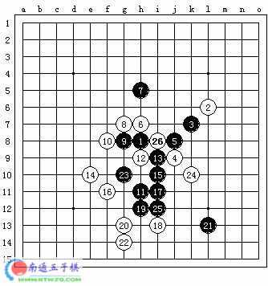
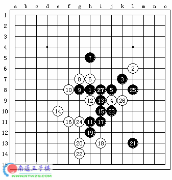

二手四三胜【21题，有难度】
首页
五子棋交流
#1 二手四三胜【21题，有难度】 作者：有志青年 发表时间：2006-1-10 12:33:20
这题好像有些难度 的
#2 Re:二手四三胜【21题，有难度】 作者：有志青年 发表时间：2006-1-10 12:34:51
四手胜就是用四个棋子就要胜利。（即黑棋成5个）
换言之，用两手做到四三。
#3 Re:二手四三胜【21题，有难度】 作者：有志青年 发表时间：2006-1-10 12:36:22
#4 Re:二手四三胜【21题，有难度】 作者：幽若 发表时间：2006-1-10 13:33:04
23手走12K为什么错,怎么俺感觉12K能杀捏
#5 Re:Re:二手四三胜【21题，有难度】 作者：有志青年 发表时间：2006-1-10 16:23:10

#6 Re:二手四三胜【21题，有难度】 作者：温柔一刀 发表时间：2006-1-11 13:42:52
黑放k
#7 Re:二手四三胜【21题，有难度】 作者：温柔一刀 发表时间：2006-1-11 13:45:52
黑放 k 9 ，然后黑 h 10 和 j 10，两个冲四胜
#8 Re:二手四三胜【21题，有难度】 作者：温柔一刀 发表时间：2006-1-11 13:55:38
上面的答案是最上面的图的杀法，
这个答案是最下面图的杀法，黑h 10，h 13，j 11，i 12 ，k10 ，五个冲四
#9 Re:二手四三胜【21题，有难度】 作者：有志青年 发表时间：2006-1-11 14:59:19
两手四三胜！只能两手
#10 Re:二手四三胜【21题，有难度】 作者：幽若 发表时间：2006-1-11 15:06:07
哈哈,可以5手俺早杀了,四手想死俺也没想到呢
#11 Re:二手四三胜【21题，有难度】 作者：温柔一刀 发表时间：2006-1-12 11:53:34
上面两个图不同，如果是最上面的图，我的解法上面有了，看看个行！
最下面的图蛮难！
#12 Re:二手四三胜【21题，有难度】 作者：江南新绿 发表时间：2006-2-5 14:23:34
公布答案
这个题目我还找到一个大道五目的bug。
 http://www.pinqi.net/forum/UploadFile/2005-7/2005792087574.jpg
http://www.pinqi.net/forum/UploadFile/2005-7/2005792087574.jpg
#13 Re:二手四三胜【21题，有难度】 作者：江南新绿 发表时间：2006-2-5 14:26:18

怎么刚才图片没发出来呢
#14 Re:二手四三胜【21题，有难度】 作者：chlx0418 发表时间：2006-2-6 22:02:49
老大公布答案吧.....
是G10吗?.....
#15 Re:Re:二手四三胜【21题，有难度】 作者：有志青年 发表时间：2006-2-7 8:45:20
引用：
原文由 chlx0418 发表于 2006-2-6 22:02:49 :
老大公布答案吧.....
是G10吗?.....
你的g10点，白有妙防，很不容易看到，将黑方的三变成眠三，有点悬崖边走的感觉。

正确答案，江南新绿已经公布了，只是江南大哥，贴了三张图，不容易看懂。见下面

#16 Re:二手四三胜【21题，有难度】 作者：chlx0418 发表时间：2006-2-7 9:32:01
晕,你前面在J10上打了个错我就没去想那里....
#17 Re:二手四三胜【21题，有难度】 作者：chlx0418 发表时间：2006-2-7 9:35:54
哦,L8之后I8就不是禁手了啊,才发现这一点,呵呵,禁手真是很复杂啊
#18 Re:二手四三胜【21题，有难度】 作者：飞翔 发表时间：2006-2-14 13:04:51
问下vcf算一手？
#19 Re:二手四三胜【21题，有难度】 作者：耳日 发表时间：2006-3-4 9:36:34
j12/i12
#20 Re:二手四三胜【21题，有难度】 作者：初学者451 发表时间：2006-3-22 9:59:41
先k10,后k8或i12,大家看行吗?
#21 Re:二手四三胜【21题，有难度】 作者：孤星冷月 发表时间：2006-3-28 19:30:35
23手放K12就可以了。
#22 Re:二手四三胜【21题，有难度】 作者：qq4114 发表时间：2006-4-6 10:37:05
学习
#23 Re:二手四三胜【21题，有难度】 作者：太子白 发表时间：2006-4-9 15:11:27
j11 k12 h12 这 样下三手胜
#24 Re:Re:二手四三胜【21题，有难度】 作者：蚯蚓降龙 发表时间：2006-9-12 0:28:36
k10就行了啊
#25 Re:二手四三胜【21题，有难度】 作者：蚯蚓降龙 发表时间：2006-9-12 0:30:13
k10啊
#26 Re:二手四三胜【21题，有难度】 作者：蚯蚓降龙 发表时间：2006-9-12 0:34:22
呵呵 众说纷纭
#27 Re:二手四三胜【21题，有难度】 作者：星尘 发表时间：2006-9-27 14:30:23
黑走K11后J10、K9、K10四三胜
#28 Re:二手四三胜【21题，有难度】 作者：偷贼的井盖 发表时间：2006-11-14 20:08:17
还没看明白
#29 Re:二手四三胜【21题，有难度】 作者：偷贼的井盖 发表时间：2006-11-14 20:42:46
J10可以杀吧？
#30 Re:二手四三胜【21题，有难度】 作者：sheal 发表时间：2006-12-10 14:29:28
两手胜就是
活三加下一手冲四活三.或者双杀(两个杀都需要下一手冲四活三.)或者是两手VCF冲到冲四活三.(这个不知道算不算)
我方冲四敌方反四,我方再反四回来,只算一手.这个是特殊的.
VCF有多少手算多少手.
这个题目的图有问题...黑有活三,白居然不挡..这个太没天理了.请楼主改一下图,发个正确的上来.
#31 Re:二手四三胜【21题，有难度】 作者：黄乐骏 发表时间：2006-12-12 11:29:33
2手：10J 下一手：11K或10H
#32 Re:二手四三胜【21题，有难度】 作者：天香小雪 发表时间：2007-1-3 1:13:55
#33 Re:二手四三胜【21题，有难度】 作者：休闲号 发表时间：2007-4-11 11:08:38
汗。一道想了N久的道就是这么简单
#34 Re:二手四三胜【21题，有难度】 作者：娅娅 发表时间：2007-4-23 19:16:59
有志,二步杀.23走10G,一步双杀.对吗?
#35 Re:二手四三胜【21题，有难度】 作者：SOGA 发表时间：2007-4-25 18:07:41
直接J10不就行了啊
#36 Re:二手四三胜【21题，有难度】 作者：长笑 发表时间：2007-5-23 17:10:39
下J10不行吗,J10后,在L8做长连解四四禁,不就四手胜了吗.
#37 Re:二手四三胜【21题，有难度】 作者：fengle 发表时间：2007-6-24 22:45:15
L8,长连解44，然后连冲
#38 Re:二手四三胜【21题，有难度】 作者：风の情深 发表时间：2007-7-19 14:05:23
好题!!!!
#39 Re:二手四三胜【21题，有难度】 作者：lilied 发表时间：2007-7-21 11:39:39
误解了 2手43胜，我知道答案的下法，但MS不算43吧 只能说解禁
#40 Re:有志青年【==Re:二手四三胜【21题，有难度】==】 作者：伏龙隐士 发表时间：2012-3-11 21:48:11
老大误解人啊，k6没错啊，我想了半天，可以解禁的啊